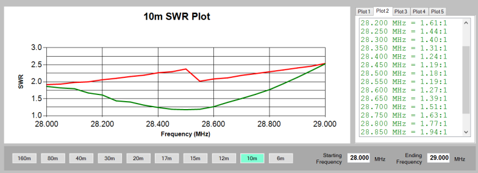
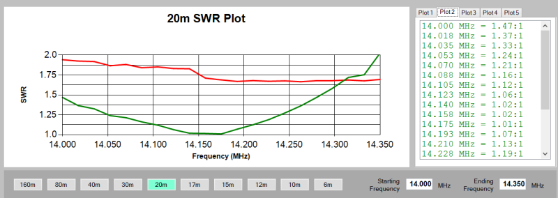

I second this idea as the driven element has a built in Balun to match the impedance of a beam and will be incorrect as a single element. The sweeps below are from my Flex6500 and the RED scan is with only the Driven element and the Director is retracted as it would appear if it was not there. The green trace is with the Driven and Director both working. I tuned the Driven element to the best match in the middle of each band, without the second element.
You can see how important the second element becomes.



From: Chat [mailto:chat-bounces@ncdxc.org] On Behalf Of SPWoo via Chat
Sent: Wednesday, April 15, 2015 11:37 AM
To: Chat NCDXC
Subject: Re: [NCDXC Chat] SteppIR again
The two-element Steppir only has a 5' boom. Why not get a two-element and the 4db gain?
Best Regards,
Jonathan Woo
(970) 646-1711
On Wednesday, April 15, 2015 12:34 PM, Ak6zz via Chat <chat@ncdxc.org> wrote:
Jim,
I am getting the dipole only. It is a very good deal and was hardly used. My ehu issues was with the trombone and one of the older ehu's.
It will replace my many experiments with antennas at this qth and will give me something to build on down the road. The single element is still pretty long but I am confident that it will outperform the TGM.
Keith
AK6ZZ
Sent from my iPhone
> On Apr 15, 2015, at 11:23 AM, Jim Brown via Chat <chat@ncdxc.org> wrote:
>
>> On Wed,4/15/2015 11:02 AM, Ak6zz via Chat wrote:
>> I just committed to purchase an used steppir 20 to 6 dipole from Skip the tower guy in woodland hills. My previous experience with steppir was poor especially with the trombone unit for 40/30. After multiple ehu replacements I swore off steppir forever.
>
> Are you getting a complete 2 or 3-element Yagi, or only the driven element? My 3-el with fixed 6M has been up for about 5 years, with no problems I can blame on the antenna. I have experienced two problems that took it off the air and cost me money, but they were installation-related, not the fault of the antenna.
>
> Between NCCC and this club, we have plenty of SteppIR experience locally, so we should be able to arrange an antenna party for you after Visalia. Ask again then.
>
> 73, Jim K9YC
>
>
>
>
> _______________________________________________
> Chat mailing list
> Chat@ncdxc.org
> http://mail.ncdxc.org/mailman/listinfo/chat_ncdxc.org
> Message delivered to ak6zz@hotmail.com
_______________________________________________
Chat mailing list
Chat@ncdxc.org
http://mail.ncdxc.org/mailman/listinfo/chat_ncdxc.org
Message delivered to jj_2_woo@yahoo.com